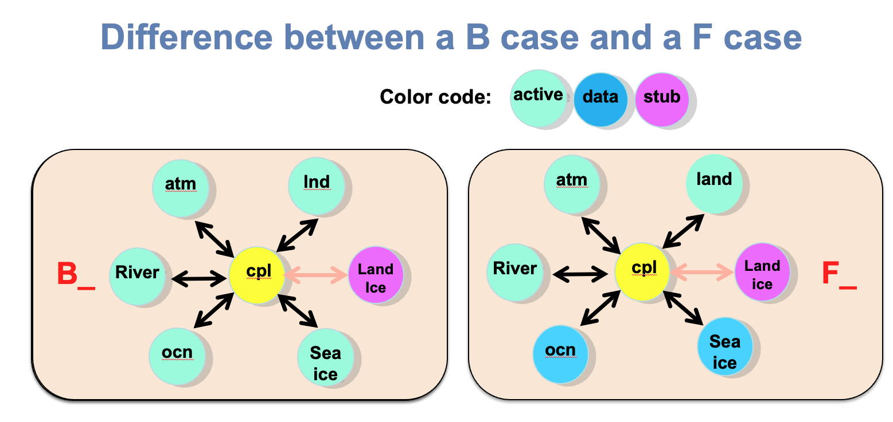

Atmosphere#
Learning Goals#
By the end of this chapter, you will be able to:
Explain what an F compset is and how it differs from a fully coupled B compset.
Identify the different forcing options available for F compsets (e.g., climatological and historical forcings).
Use CESM tools and documentation to identify and explore available compsets.
Modify input datasets using NCO (NetCDF Operators) or python scripts.
You will:
Create and run an F compset simulation in CESM.
Design and run simple sensitivity experiments by changing model forcing, datasets, or model parameters.
What is a F compset ?#
One of the strengths of CESM is that its model components can be combined in many different ways to answer different scientific questions.
The CESM components can be combined in numerous ways to carry out various scientific or software experiments. A particular mix of components, along with component-specific configuration and/or namelist settings is called a component set or compset.
In the previous chapter, you ran experiments with the
Bcompset. B compsets are fully coupled simulations in which the atmosphere, ocean, land, and sea ice all interact with each other.In this chapter you will run the experiments with the
Fcompset. TheFcompsets use prescribed ocean (observed sea-surface temperature data) and prescribed sea-ice (observed sea-ice thickness and area)
In an F compset:
The atmosphere and land models are active but there is no active ocean model.
Sea surface temperatures (SSTs) are prescribed from observations or external datasets.
Sea ice concentration and thickness are also prescribed.
Because the ocean state is fixed, F compsets are often used to:
Test atmospheric model changes.
Study the atmospheric response to SST anomalies.
Evaluate model physics.
Run experiments that are computationally cheaper than fully coupled simulations.
Examples of F compsets
FHISTC_LTsouses time-varying historical forcings, including observed SSTs and sea ice, with the low-top atmosphere configuration.FHISTC_MTsouses time-varying historical forcings, including observed SSTs and sea ice, with the mid-top atmosphere configuration.F1850C_LTsouses repeating pre-industrial (circa 1850) climatological forcings, SSTs, and sea ice with the low-top atmosphere configuration.

Figure: Differences between a F and a B compset. In a B compset, the atmosphere, ocean, land, and sea ice exchange information and evolve together. In an F compset, the ocean and sea ice are prescribed from external datasets, allowing researchers to isolate atmospheric processes and perform experiments more efficiently.
Finding more information about compsets#
If you want to run a different configuration from what you’ve learned here, it is important to learn how to find and/or modify a compset.
The tool query compsets allows you to find more information about the available compsets. This tool is located in the same directory as create_newcase in /glade/u/home/$USER/code/my_cesm_code/cime/scripts/.
The command is:
cd /glade/u/home/$USER/code/my_cesm_code/cime/scripts/
./query_config --compsets
Note that this command returns a lot of compsets.
Using the tool above and/or web searches below, find a CESM compset with an active atmosphere version cam7.0, that uses historical forcing data including sea surface temperatures. If you find several candidates, look at the components option and/or webpage to decide. Is it scientifically validated? For what resolutions?
Click here for the solution
The command gives a list of all the compsets available, and what components are included.
cd /glade/u/home/$USER/code/my_cesm_code/cime/scripts/
./query_config --compsets
This shows all the possible compsets. There are a lot of compsets. To narrow down your choices to include only CAM7:
./query_config --compsets | grep -i CAM7
To narrow down your choices to include only CAM7 and historical:
./query_config --compsets | grep -i CAM7 | grep -i HIST
Building your own compset (Advanced)#
If you want to build your own compset, you can see all your options, perhaps modify one of the above with changes
cd /glade/u/home/$USER/code/my_cesm_code/cime/scripts/
./query_config --components
Compsets definition#
More explanation about compsets can be found in the docs:
https://www.cesm.ucar.edu/models/cesm2/config/compsets.html
Disclaimer: this is still the CESM2 documentation. CESM3 documentation will be coming after the release.
Atmospheric models in CESM#
There are a number of atmospheric models which can run within CESM. While CAM is the basic atmospheric model within CESM, there are several models with significant extensions to CAM which may also be run within CESM. The available atmospheric models in CESM2 are:
CAM: Community Atmosphere Model
CAM-chem: Community Atmosphere Model with Chemistry
WACCM: Whole Atmosphere Community Climate Model
WACCM-X: Whole Atmosphere Community Climate Model with thermosphere and ionosphere extension
https://ncar.github.io/CAM/doc/build/html/users_guide/atmospheric-configurations.html